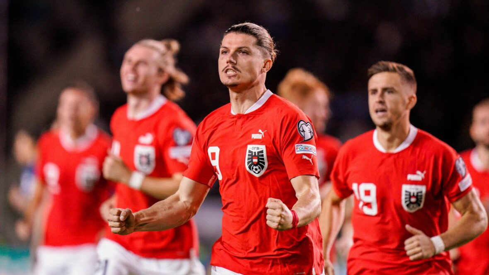

A primeira participação da Áustria na Eurocopa foi na edição de 2008, realizada na Áustria e na Suíça. Nesse torneio, a Áustria se classificou automaticamente como país anfitrião. Foi a primeira vez que a Áustria participou da fase final da Eurocopa desde que se qualificou como nação independente.

TÍTULOS
A Áustria ainda não conquistou nenhum título na Eurocopa. Sua melhor participação ocorreu em 2008, quando co-organizou o torneio com a Suíça, mas foi eliminada na fase de grupos. Até agora, a Áustria não tem títulos na Eurocopa em sua história.
MELHORES MOMENTOS
A Áustria já protagonizou uma campanha memorável na Eurocopa de 2024. A seleção austríaca levou a melhor sobre a Holanda por 3 a 2, na última rodada do grupo D, no Estádio Olímpico de Berlim, e ficou com a primeira colocação da chave, beneficiada pelo empate entre França e Polônia.